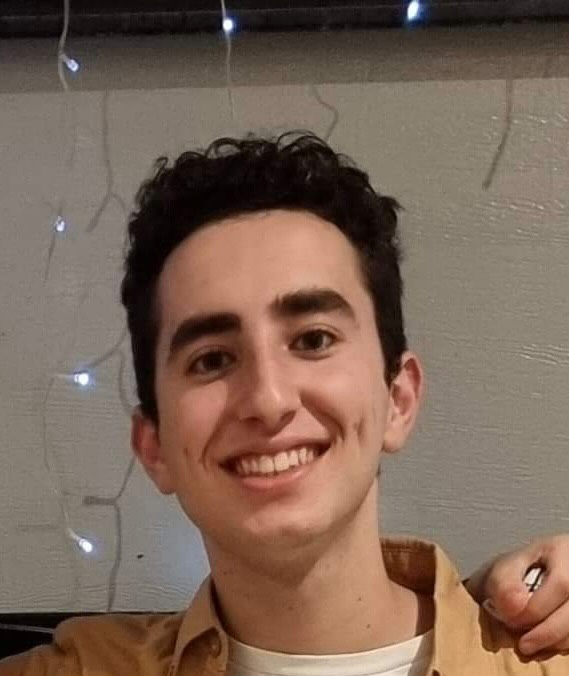

Meet team Bravo
The name Bravo derived from an early method of finding teams for the course. When it came to choosing our team's name, we chose to stick with Bravo. Over the duration of the assessment, the name Bravo has had some inside jokes, but overall, really does go well with our team and our ideas.
This page introduces each member of team Bravo. For each member you will find the following: Member's Name, a photo, student number (#), the link to each member's individual website, followed by an introduction from each member.
Hi, I'm Thomas.
Born and raised in Australia, my hobbies mainly include board games and video games. Interest in IT is focused on web development and cloud computing. Experience includes building web applications to meet clients' requirements on multiple platforms, including desktop, mobile and web.

Hi I'm Jo,
Born in Victoria, I grew up in a small town marked 'the centre of Victoria'. I'm 36 years old; I have two children, a 14yo son and a 10yo daughter. I wanted to be a paramedic and was very passionate about it. I spent six years as a volunteer First Responder (Advanced First Aid) with St John Ambulance Victoria, including 18 months as a grade IIII operations officer. As a result of my medical diagnosis, I could not continue in the medical field. Therefore, I re-evaluated what I could do, and the outcome happened to be Information Technology (IT). My decision to choose to study IT was very influential. Through conversation with a programmer friend, I began to realise I have a deep underlying interest in the future of technology and how it can help for good.
Hey, I'm Shay.
I was born an Indigenous Australian, with my biological father being Yugoslavian - known today as Serbia - and Maltese. My mother is Indigenous, with Irish in her line as well. Born an angry fighting nerd, my interest in computers was set to be guaranteed. Between the writing, gaming, existential dread and computing, there's not much time for other pastimes, but I make time. Or at least time signatures! I write music in my spare time. It's not good music, but it exists. Other things I like are pizza, swords, and comic sans. My next steps are more University, programming, video game design, law, music, creative writing, history, architecture, finance, and philosophy. There's no such thing as being too qualified, and they say that the Jack-of-All-Trades, Master of None, is better than the Master of One. I still will try and Master at least one.

My name is Nathen.
Hey howdy hey, I'm new to the whole programming and IT scene outside of doing it in high school a tiny bit; However, I have always had an interest in these areas, just never put any effort into officially pursuing them as a profession until now; I spend most of my time socialising with friends via discord or in person. Honestly, it's scarce that I'm not perpetually in conversation due to this; my central pass time would overwhelmingly be gaming; I'm always on the watch for what's new and exciting within this area and all tech, for that matter.
My name is Gianni.
I am 18 years old, have just recently finished my year 12 VCE and am studying for a Bachelor of IT at RMIT. I love most things IT-related, mainly computers and gaming consoles, however. Growing up, I fell in love with tech and devices from things like the Play station's 1-5, the original Nintendo DS, Gameboys and more. Throughout my life, I have loved the outdoors and going on adventures with my family to places such as Lorne, The Grampians and Echuca. I have also been overseas to the U.S.A, where I've been to places such as New York, LA, Las Vegas and more. I am also an athletic person and have played many sports. The one I'm best at and my favourite to play is basketball.

Myers-Briggs Personality Test
An Adventurer (ISFP) is a person with the Introverted (I), Observant (S), Feeling (F), and Prospecting (P) personality traits. They tend to have open minds, approaching life, new experiences, and people with grounded warmth. Their ability to stay in the moment helps them uncover exciting potentials.
Turbulent (T) Adventurers are more sensitive to stress and can feel overwhelmed easier than Assertive (A) Adventurers. This characteristic can allow them to see little problems before they become big problems. Though Turbulent Adventurers are likely to feel more comfortable with themselves than the average Turbulent personality type, they are still less at ease in their own lives than Assertive Adventurers.”(Myers-Briggs, no date)

A Logistician (ISTJ)Logistician (ISTJ) is someone with the Introverted (I), Observant (S), Thinking (T), and Judging (J) personality traits. These people tend to be reserved yet wilful, with a rational outlook on life. They compose their actions carefully and carry them out with methodical purpose.
Unexpected changes bother Logisticians more than any other personality type, and this is especially true for Turbulent (T) Logisticians. However, in their ongoing need to improve and with their sense of uncertainty, they may actually be more willing to change, despite a certain amount of distress, than the more settled Assertive (A) Logisticians. Turbulent Logisticians are more emotionally reactive and are more likely to express and act on their emotions than Assertive personality types. The positive side of their more expressive emotions is that they can make them more accessible to others.” (Myers-Briggs, no date)

A Logician (INTP) is someone with the Introverted, Intuitive, Thinking, and Prospecting personality traits. These flexible thinkers enjoy taking an unconventional approach to many aspects of life. They often seek out unlikely paths, mixing willingness to experiment with personal creativity.
Assertive (A) Logicians are likely to be more consistent than Turbulent (T) Logicians due to confidence in the choices they make and being less influenced by others.
Turbulent Logicians change their goals more often than their Assertive cousins. This can make these personalities more flexible problem-solvers – though perhaps too flexible at times.” (Myers-Briggs, no date)

An Entertainer (ESFP) is a person with the Extraverted (E), Observant (S), Feeling (F), and Prospecting (P) personality traits. These people love vibrant experiences, engaging in life eagerly and taking pleasure in discovering the unknown. They can be very social, often encouraging others into shared activities".
Stress is less of an issue for Assertive (A) Entertainers. While difficult matters may hold the attention of Turbulent (T) Entertainers longer, it can also help them remain more aware, allowing them to perhaps alert or remind others of problems. Turbulent Entertainers tend to say they feel and express difficult emotions more than Assertive Entertainers. This tendency may create a conflict between their social natures and the need to express negative emotions – the two may not always be compatible.” (Myers-Briggs, no date)

An Advocate (INFJ) is someone with the Introverted, Intuitive, Feeling, and Judging personality traits. They tend to approach life with deep thoughtfulness and imagination. Their inner vision, personal values, and a quiet, principled version of humanism guide them in all things.
Turbulent (T) Advocates are often fueled by their worries and concerns, and these can be used to make significant progress. Both personality types are concerned with other people, but Assertive (A) Advocates are likely to be more hopeful, and Turbulent Advocates to focus on the difficult parts of a problem. Because their regrets weigh on them more, Turbulent Advocates are more likely to learn from their mistakes than Assertive Advocates.” (Myers-Briggs, no date)

What these results mean for team Bravo…
The Myers-Briggs test indeed shows the mixed profile of personalities within our team, while there is a few quite prominent differences, there are several similarities. Five members out of six classed as introverted and only one as an extravert. Half the team are classed as observant while the others intuitive. There are both thinkers and feelers among the group along with most being classed as prospecting with 2 members being the judging character. The varying approaches to things among the group is likely to allow some to work well while others are more reserved and less communicative. The Adventurers of the team have open minds and are present in the moment. Our team leader highlights a much different personality to most being rational, methodical, and unexpected changes are a hassle to this Logistician. The flexible thinking and creativity of our Logician member brings in a different style to the group. The 'Entertainer' of our group, the individual extravert, likes to engage vibrantly and enjoys discovering the unknown. And having an Advocate in the group brings a member who has deep thoughtfulness and imagination, is quiet but uses these traits to provide successful outcomes (Myers-Briggs, no date). All members are of the Turbulent trait. Although this means something different to each personality type, this allows Bravo, as a team, to combine their abilities to overcome small issues before they become big. An ongoing need for improvement adds to the drive of the group, especially in a team leader. Further, flexibility in problem solving is important in any group and with an ability to hold attention on difficult matters the team extrovert may just come in needed. Finally having the traits of a worry-led Advocate could push the final outcome of the team assessment due to the need to focus on difficult parts of a problem (Myers-Briggs, no date). Overall, the combined traits amongst the members of team Bravo, although quite varied, blend reasonably. The team had built its hierarchy before understanding this combined information, yet the positions held would match the traits explained in the results of the personality test.
Team Learning Style tests
This next section will discuss the results of the learning style tests which were taken out by the individual members of the team. The tests taken and results derived from each test varies. Three separate tests were used amongst members and the results reported below are reported in 2 separate formats to allow for methods which results were delivered. Test results are concluded with a summary of what the results of the learning style tests indicate for the team.
The first format will display the title of the test used, under that will show team member, in-line with their learning style (shown in italics), below this result is the member's quoted summarised result of each their individual result. The second format will show test name under this will display member name, again in-line with their learning style (shown in italics), under this result shows the percentage results the member received followed by a paraphrased summary of results summary on website.
Stephan - Kinaesthetic learner
"Kinaesthetic style is learning by doing. I know in this manner whenever I capture new information through the process of physical activity. It is often referred to as a hands-on learning experience." (Personalitymax, 2022)
Nathen - Auditory learning
"An Auditory learner. Someone who understands and processes things easier by hearing the words spoken to them than by doing or reading." (Personalitymax, 2022)
Jo - Aural learning style
"Aural learners learn best through listening. Sound and music often make processing information more fluent. Listening and verbalizing are the best methods to retain information." (Matrix Education, 2016)
Shay - Auditory / Tactile learner
- Auditory 40%
- Visual 20%
- Tactile 40%
"If you are an auditory/tactile learner, you learn by hearing and listening while combining that with touching and doing. You understand and remember things you have heard and experienced through physical movement. You are a "hands-on" learner who prefers to touch, move, build, or draw what you learn. You store information by the way it sounds, and you have an easier time understanding spoken instructions than written ones especially when some type of physical activity is involved. You often learn by reading out loud because you have to hear it or speak it in order to know it. You need to be active and take frequent breaks, you often speak with your hands and with gestures, and you may have difficulty sitting still". (Educationplanner.org, 2011-2022)
Gianni - Visual / Tactile learner
- Auditory 30%
- Visual 35%
- Tactile 35%
"If you are a visual/tactile learner, you learn by reading or seeing, touching and doing. You understand and remember things by sight and through physical movement. You can picture what you are learning in your head but you tend to learn better when some type of physical activity is involved, and you learn best by using methods that are primarily visual and "hands-on" you prefer to touch, move, build, or draw what you learn. You like to see what you are learning. You need to be active and take frequent breaks, you often speak with your hands and with gestures, and you may have difficulty sitting still" (Educationplanner.org, 2011-2022).
Thomas - Visual learner
- Auditory 10%
- Visual 50%
- Tactile 40%
"If you are a visual learner, you learn by reading or seeing pictures. You understand and remember things by sight. You can picture what you are learning in your head, and you learn best by using methods that are primarily visual. You like to see what you are learning."(Educationplanner.org, 2011-2022)
What these results mean for team Bravo...
Team Bravo's six members tend to have varied however blending learning styles. With the team leader standing out with Kinaesthetic learning, other members seem to be a mix of auditory, visual, and tactile learners. Having a mixture of learning styles within a group is certainly beneficial to a team as all members bring a mix of abilities and ideas. The team appears to communicate well and each member is comfortable with their positions in the team. Work seems to come together easy and the combination of learning style, skill and differing knowledge just seems to mould the groups work efforts with ease.
Random Test Choice
In this final section of Personal Profile test results, all data was collaborated from the Big Five Personality Test. We were able to combine results as a team which gave a comparison chart and a report on the results as a team. Each member provided a quoted summary of what their own results meant to them, which complimented their percentage results. Concluded with a summary of how the results of this test impact the team.
The report displays information in the following format: Name of test, under this is an image of the team overview results graph with a description of image and link to team comparison results URL; Member's Name, in-line with their Strongest Trait; under that you will see the Percentage Scores for each trait for that member; followed up with the member's own words of how their results made them feel and the link to the individual's results.
Big Five Personality Test

In the graph above you see the 'Overall' comparison of the [six] team members' results of the Big Five Personality Test. To view all comparison graphs and comments of the team comparison please visit: URL Team Comparison of personalities from the Big Five personality traits test - Big Five (bigfive-test.com).
Stephan results
Neuroticism
- Openness 79%
- Conscientiousness 90%
- Extraversion 67%
- Agreeableness 85%
- Neuroticism 94%
"The Big Five Personality test told me what I already knew that I tend to experience negative feelings, which comes with the title of my last job. However, I expected to score high on openness as I am always willing to share my thoughts and feelings with others for them to feel less alone in their feelings, and this also helps me cope with my issues. I also scored highly on agreeableness which I also expected; I tend to avoid confrontation; therefore, I try my best to cooperate and get along with others. I did score low in extraversion which would be a result of my history, I would much rather spend time alone or with a small group of close friends, than with a large group." See my results at: https://bigfive-test.com
Jo results
Agreeableness
- Openness 85%
- Conscientiousness 88%
- Extraversion 58%
- Agreeableness 100%
- Neuroticism 58%
"In the Big Five Personality Test I scored 100% on agreeableness, which reiterates I am easy to get along with and work well in a team. While also scoring between 80-90% with Conscientiousness, Openness and Neuroticism, from this I understand through my tendency to experience high negative feelings especially in self-consciousness, having awareness of my feelings drives my need to have control over the success of things. Scoring low in extraversion is an unfortunate result of my social history, however I do score high in assertiveness and cheerfulness which explains I do like to speak out and take charge and typically share enthusiasm and optimism and generally convey a positive mood." See my results at: https://bigfive-test.com
Shay results
Openness
- Openness 102%
- Conscientiousness 58%
- Extraversion 81%
- Agreeableness 92%
- Neuroticism 101%
"I'm more feeling than I expected, in that I am more emotion sensitive than I was prepared to face. I get to take a look in a different way to teammates, who might be more logical, thinking and involved in projects. The way I can make myself less feeling, and become a better logical thinker is possibly to take more time with logic puzzles." See my results at: https://bigfive-test.com
Thomas results
Agreeableness
- Openness 70%
- Conscientiousness 95%
- Extraversion 78%
- Agreeableness 99%
- Neuroticism 67%
"What I find so fascinating about the results is the extraversion results. I do not consider myself to be much of an extravert. It says I have a high score for assertiveness; however, I do not believe I speak out as much as these results suggest I do. However, I do agree with the rest of the results, as I have found myself to being open and friendly with others, non-aggressive. Always agreeable and avoiding conflict whenever possible. I always strive to keep a clear mind and consider solutions before acting if it serves for better results. Overall, the test seems to be a good representation of who I am to a degree." See my results at: https://bigfive-test.com
Nathen results
Agreeableness
- Openness 46%
- Conscientiousness 48%
- Extraversion 58%
- Agreeableness 75%
- Neuroticism 58%
"In the Big Five Personality test, I scored highly in Agreeableness showing that I am expected to choose to cooperate with others rather than compete with them, and that I have a great deal of empathy. While scoring low in areas such as openness, This I feel is rather accurate to how I believe myself to be, I find myself often being the type of person who would suppress their own feelings or push them aside to try to help another person to be happy." See my results at: https://bigfive-test.com
Gianni results
Neuroticism
- Openness 78%
- Conscientiousness 81%
- Extraversion 65%
- Agreeableness 90%
- Neuroticism 94%
"In my big 5 personality test I scored a 15/20 in my trust. Based on the Big 5 test “A person with high trust assumes that most people are fair, honest, and have good intentions. Persons low in trust see others as selfish, devious, and potentially dangerous”. So based on the result and definition, I am a very trustful person who can be left with tasks or secrets and would not often break someone's trust in me." See my results at: https://bigfive-test.com
|
|
Stephan
|
Jo
|
Shay
|
Thomas
|
Nathan
|
Gianni
|
Openness
|
79%
|
85%
|
102%
|
70%
|
46%
|
78%
|
Conscientiousness
|
90%
|
88%
|
58%
|
95%
|
48%
|
81%
|
Extraversion
|
67%
|
58%
|
81%
|
78%
|
58%
|
65%
|
Agreeableness
|
85%
|
100%
|
92%
|
99%
|
75%
|
90%
|
Neuroticism
|
94%
|
80%
|
101%
|
67%
|
58%
|
94%
|
What this means for team Bravo...
Among the six members of team Bravo, all members scored quite high percentages in Agreeableness with all members scoring between 75-100%. The ease in which we were able to form our team and delegate tasks with no issues has been a result of the agreeableness within the team. Openness however seen much lower percentage scores for majority of team members, with only 1 scoring high and rest of team between 70-85%. This has created low communication levels from some members. Extraversion was reasonably low throughout the team, and although conscientiousness scored a wide variety of percentage, neither of these traits got a high score from members of team Bravo. Neuroticism seen the other 2 members of the team's highest percentages', again, though varying, most members were in a higher percentage of neuroticism. (Rubynor, no date) Bravo's members tend to have many different traits which seem to have worked reasonably well in the early stages of teamwork.